WorstCaseMeasure distribution¶
(Source code, png, hires.png, pdf)
{kind=link}
{kind=link}
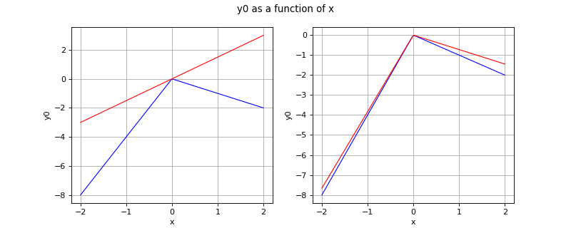
-
class
otrobopt.WorstCaseMeasure(*args)¶ Worst case measure function.
It is built from a parametric function
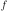
and a distribution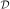
of density function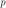
.In case of a continuous distribution:
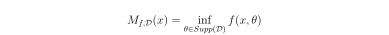
In case of a discrete distribution:
- Parameters
- function
openturns.Function Parametric function
- distribution
openturns.Distribution Distribution of parameters
- isMinimizationbool (optional, defaults to True)
Whether the worst case is the minimization of the criteria
- function
Examples
>>> import openturns as ot >>> import otrobopt >>> thetaDist = ot.Uniform(-1.0, 4.0) >>> f_base = ot.SymbolicFunction(['x', 'theta'], ['x*theta']) >>> f = ot.ParametricFunction(f_base, [1], [1.0]) >>> measure = otrobopt.WorstCaseMeasure(f, thetaDist, False) >>> x = [1.0] >>> print(measure(x)) [4]
Methods
__call__(inP)Call self as a function.
draw(*args)Draw the output of function as a
Graph.Accessor to the number of times the function has been called.
Accessor to the object’s name.
Accessor to the description of the inputs and outputs.
Distribution accessor.
Function accessor.
getId()Accessor to the object’s id.
Accessor to the description of the inputs.
Accessor to the number of the inputs.
getMarginal(*args)Accessor to marginal.
getName()Accessor to the object’s name.
Optimization solver accessor.
Accessor to the description of the outputs.
Accessor to the number of the outputs.
Accessor to the parameter values.
Accessor to the parameter description.
Accessor to the dimension of the parameter.
Accessor to the object’s shadowed id.
Accessor to the object’s visibility state.
hasName()Test if the object is named.
Test if the object has a distinguishable name.
Accessor to the validity flag.
isLinear()Accessor to the linearity of the evaluation.
isLinearlyDependent(index)Accessor to the linearity of the evaluation with regard to a specific variable.
Minimization flag accessor.
parameterGradient(inP)Gradient against the parameters.
setDescription(description)Accessor to the description of the inputs and outputs.
setDistribution(distribution)Distribution accessor.
setFunction(function)Function accessor.
setInputDescription(inputDescription)Accessor to the description of the inputs.
setMinimization(minimization)Minimization flag accessor.
setName(name)Accessor to the object’s name.
setOptimizationAlgorithm(solver)Optimization solver accessor.
setOutputDescription(outputDescription)Accessor to the description of the outputs.
setParameter(parameters)Accessor to the parameter values.
setParameterDescription(description)Accessor to the parameter description.
setShadowedId(id)Accessor to the object’s shadowed id.
setVisibility(visible)Accessor to the object’s visibility state.
-
__init__(*args)¶ Initialize self. See help(type(self)) for accurate signature.
-
draw(*args)¶ Draw the output of function as a
Graph.- Available usages:
draw(inputMarg, outputMarg, CP, xiMin, xiMax, ptNb)
draw(firstInputMarg, secondInputMarg, outputMarg, CP, xiMin_xjMin, xiMax_xjMax, ptNbs)
draw(xiMin, xiMax, ptNb)
draw(xiMin_xjMin, xiMax_xjMax, ptNbs)
- Parameters
- outputMarg, inputMargint,
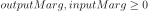
outputMarg is the index of the marginal to draw as a function of the marginal with index inputMarg.
- firstInputMarg, secondInputMargint,

In the 2D case, the marginal outputMarg is drawn as a function of the two marginals with indexes firstInputMarg and secondInputMarg.
- CPsequence of float
Central point.
- xiMin, xiMaxfloat
Define the interval where the curve is plotted.
- xiMin_xjMin, xiMax_xjMaxsequence of float of dimension 2.
In the 2D case, define the intervals where the curves are plotted.
- ptNbint
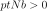
or list of ints of dimension 2
The number of points to draw the curves.
- outputMarg, inputMargint,
Notes
We note
 where
where 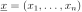
and ,
with
,
with  and
and  .
.
In the first usage:
Draws graph of the given 1D outputMarg marginal
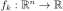
as a function of the given 1D inputMarg marginal with respect to the variation of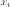
in the interval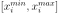
, when all the other components of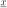
are fixed to the corresponding ones of the central point CP. Then it draws the graph:![t\in [x_i^{min}, x_i^{max}] \mapsto f_k(CP_1, \dots, CP_{i-1}, t, CP_{i+1} \dots, CP_n)](../../_images/math/47544e87a25b914b0bbb033028bfb708b12c31a7.svg) .
.
In the second usage:
Draws the iso-curves of the given outputMarg marginal
 as a
function of the given 2D firstInputMarg and secondInputMarg marginals
with respect to the variation of
as a
function of the given 2D firstInputMarg and secondInputMarg marginals
with respect to the variation of  in the interval
in the interval
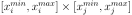
, when all the other components of are fixed to the corresponding ones of the central point CP. Then it draws the graph: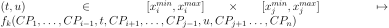
.In the third usage:
The same as the first usage but only for function
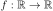
.In the fourth usage:
The same as the second usage but only for function
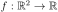
.Examples
>>> import openturns as ot >>> from openturns.viewer import View >>> f = ot.SymbolicFunction(['x'], ['sin(2*pi_*x)*exp(-x^2/2)']) >>> graph = f.draw(-1.2, 1.2, 100) >>> View(graph).show()
-
getCallsNumber()¶ Accessor to the number of times the function has been called.
- Returns
- calls_numberint
Integer that counts the number of times the function has been called since its creation.
-
getClassName()¶ Accessor to the object’s name.
- Returns
- class_namestr
The object class name (object.__class__.__name__).
-
getDescription()¶ Accessor to the description of the inputs and outputs.
- Returns
- description
Description Description of the inputs and the outputs.
- description
Examples
>>> import openturns as ot >>> f = ot.SymbolicFunction(['x1', 'x2'], ... ['2 * x1^2 + x1 + 8 * x2 + 4 * cos(x1) * x2 + 6']) >>> print(f.getDescription()) [x1,x2,y0]
-
getDistribution()¶ Distribution accessor.
- Returns
- distribution
openturns.Distribution Parameters distribution.
- distribution
-
getFunction()¶ Function accessor.
- Returns
- function
openturns.Function Parametric function.
- function
-
getId()¶ Accessor to the object’s id.
- Returns
- idint
Internal unique identifier.
-
getInputDescription()¶ Accessor to the description of the inputs.
- Returns
- description
Description Description of the inputs.
- description
Examples
>>> import openturns as ot >>> f = ot.SymbolicFunction(['x1', 'x2'], ... ['2 * x1^2 + x1 + 8 * x2 + 4 * cos(x1) * x2 + 6']) >>> print(f.getInputDescription()) [x1,x2]
-
getInputDimension()¶ Accessor to the number of the inputs.
- Returns
- number_inputsint
Number of inputs.
Examples
>>> import openturns as ot >>> f = ot.SymbolicFunction(['x1', 'x2'], ... ['2 * x1^2 + x1 + 8 * x2 + 4 * cos(x1) * x2 + 6']) >>> print(f.getInputDimension()) 2
-
getMarginal(*args)¶ Accessor to marginal.
- Parameters
- indicesint or list of ints
Set of indices for which the marginal is extracted.
- Returns
- marginal
Function Function corresponding to either
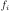
or , with
, with  and
and 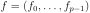
.
- marginal
-
getName()¶ Accessor to the object’s name.
- Returns
- namestr
The name of the object.
-
getOptimizationAlgorithm()¶ Optimization solver accessor.
- Returns
- solver
openturns.OptimizationAlgorithm Optimization solver
- solver
-
getOutputDescription()¶ Accessor to the description of the outputs.
- Returns
- description
Description Description of the outputs.
- description
Examples
>>> import openturns as ot >>> f = ot.SymbolicFunction(['x1', 'x2'], ... ['2 * x1^2 + x1 + 8 * x2 + 4 * cos(x1) * x2 + 6']) >>> print(f.getOutputDescription()) [y0]
-
getOutputDimension()¶ Accessor to the number of the outputs.
- Returns
- number_outputsint
Number of outputs.
Examples
>>> import openturns as ot >>> f = ot.SymbolicFunction(['x1', 'x2'], ... ['2 * x1^2 + x1 + 8 * x2 + 4 * cos(x1) * x2 + 6']) >>> print(f.getOutputDimension()) 1
-
getParameterDescription()¶ Accessor to the parameter description.
- Returns
- parameter
Description The parameter description.
- parameter
-
getParameterDimension()¶ Accessor to the dimension of the parameter.
- Returns
- parameter_dimensionint
Dimension of the parameter.
-
getShadowedId()¶ Accessor to the object’s shadowed id.
- Returns
- idint
Internal unique identifier.
-
getVisibility()¶ Accessor to the object’s visibility state.
- Returns
- visiblebool
Visibility flag.
-
hasName()¶ Test if the object is named.
- Returns
- hasNamebool
True if the name is not empty.
-
hasVisibleName()¶ Test if the object has a distinguishable name.
- Returns
- hasVisibleNamebool
True if the name is not empty and not the default one.
-
isActualImplementation()¶ Accessor to the validity flag.
- Returns
- is_implbool
Whether the implementation is valid.
-
isLinear()¶ Accessor to the linearity of the evaluation.
- Returns
- linearbool
True if the evaluation is linear, False otherwise.
-
isLinearlyDependent(index)¶ Accessor to the linearity of the evaluation with regard to a specific variable.
- Parameters
- indexint
The index of the variable with regard to which linearity is evaluated.
- Returns
- linearbool
True if the evaluation is linearly dependent on the specified variable, False otherwise.
-
isMinimization()¶ Minimization flag accessor.
- Returns
- minimizationbool
Whether the problem is a minimization.
-
parameterGradient(inP)¶ Gradient against the parameters.
- Parameters
- xsequence of float
Input point
- Returns
- parameter_gradient
Matrix The parameters gradient computed at x.
- parameter_gradient
-
setDescription(description)¶ Accessor to the description of the inputs and outputs.
- Parameters
- descriptionsequence of str
Description of the inputs and the outputs.
Examples
>>> import openturns as ot >>> f = ot.SymbolicFunction(['x1', 'x2'], ... ['2 * x1^2 + x1 + 8 * x2 + 4 * cos(x1) * x2 + 6']) >>> print(f.getDescription()) [x1,x2,y0] >>> f.setDescription(['a','b','y']) >>> print(f.getDescription()) [a,b,y]
-
setDistribution(distribution)¶ Distribution accessor.
- Parameters
- distribution
openturns.Distribution Parameters distribution.
- distribution
-
setFunction(function)¶ Function accessor.
- Parameters
- function
openturns.Function Parametric function.
- function
-
setInputDescription(inputDescription)¶ Accessor to the description of the inputs.
- Returns
- description
Description Description of the inputs.
- description
-
setMinimization(minimization)¶ Minimization flag accessor.
- Parameters
- minimizationbool
Whether the problem is a minimization.
-
setName(name)¶ Accessor to the object’s name.
- Parameters
- namestr
The name of the object.
-
setOptimizationAlgorithm(solver)¶ Optimization solver accessor.
- Parameters
- solver
openturns.OptimizationAlgorithm Optimization solver
- solver
-
setOutputDescription(outputDescription)¶ Accessor to the description of the outputs.
- Returns
- description
Description Description of the outputs.
- description
-
setParameter(parameters)¶ Accessor to the parameter values.
- Parameters
- parametersequence of float
The parameter values.
-
setParameterDescription(description)¶ Accessor to the parameter description.
- Parameters
- parameter
Description The parameter description.
- parameter
-
setShadowedId(id)¶ Accessor to the object’s shadowed id.
- Parameters
- idint
Internal unique identifier.
-
setVisibility(visible)¶ Accessor to the object’s visibility state.
- Parameters
- visiblebool
Visibility flag.